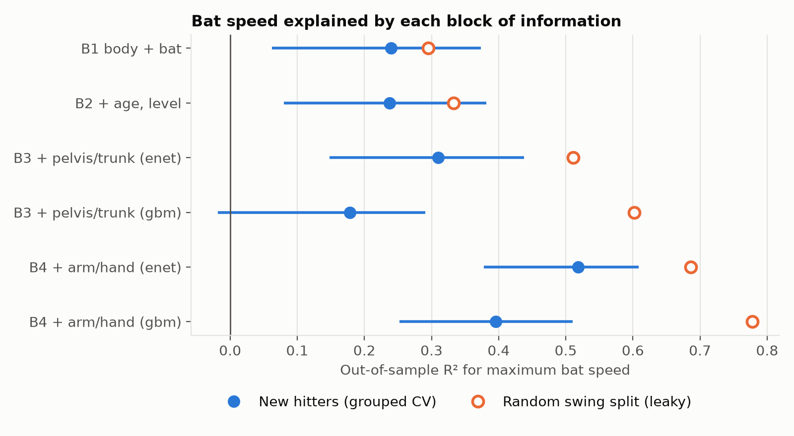
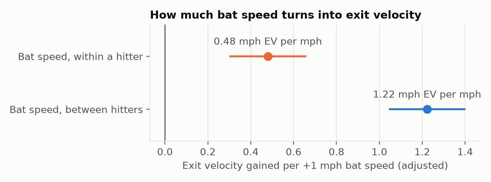
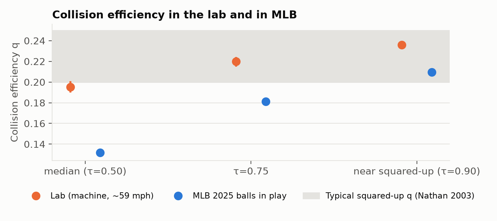
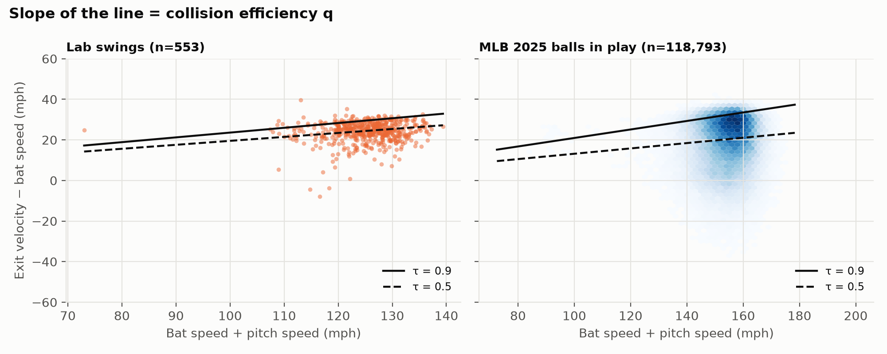

Predicting bat speed for hitters a model has never seen, and checking the lab's bat–ball physics against 2025 MLB data.
677 swings from 98 hitters in the OpenBiomechanics Project (Driveline Baseball): marker-based motion capture, about 120 swing metrics, exit velocity and HitTrax launch data, hitting off a machine at about 59 mph. The MLB comparison uses 118,793 balls in play with 2025 Statcast bat tracking.

Out-of-sample R² for maximum bat speed by information block. Filled: validated on held-out hitters, with 95% CI. Hollow: the same model under a random swing split.
| Model | R² | 95% CI | RMSE (mph) | R², leaky split |
|---|---|---|---|---|
| Body mass, height, bat size, handedness | 0.24 | 0.06–0.37 | 4.28 | 0.30 |
| + age and playing level | 0.24 | 0.08–0.38 | 4.28 | 0.33 |
| + 65 pelvis and trunk metrics (elastic net) | 0.31 | 0.15–0.44 | 4.08 | 0.51 |
| + 27 arm and hand metrics (elastic net) | 0.52 | 0.38–0.61 | 3.40 | 0.69 |
| Same, tuned boosted trees | 0.40 | 0.25–0.51 | 3.81 | 0.78 |
Mean-model RMSE 4.91 mph. R² and RMSE: averages over 20 repeats of 10-fold CV grouped by hitter. CIs: hitter bootstrap (2,000 resamples) of the first repeat.

Exit velocity per +1 mph of bat speed, adjusted for attack angle, body mass and handedness.

Collision efficiency q at three quantiles. MLB intervals are too narrow to see.

The sample is 98 mostly college hitters at one facility, hitting a machine at about 59 mph, so results may not transfer directly to game swings. The lab bat's material isn't documented, and it affects collision efficiency. The MLB comparison is exploratory: different populations, pitch speeds and measurement systems. With 98 hitters, R² gains under about 0.1 aren't separable from zero.
Data: The OpenBiomechanics Project, Driveline Baseball (CC BY-NC-SA 4.0); Baseball Savant / Statcast (MLB Advanced Media). A derived work under the same license, not affiliated with or endorsed by Driveline or MLB.